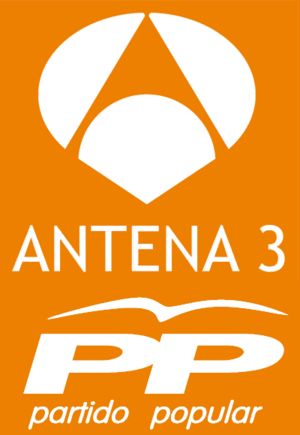
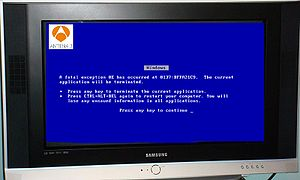

Antena 3
 De: La Frikipedia, la enciclopedia extremadamente seria.
De: La Frikipedia, la enciclopedia extremadamente seria.
 Nuevo conjunto de colores más afines con sus superiores
 A veces la programacion Antena 3 se ve interrrumpida por el Pantallazo Azul de la Muerte
Esta será una de las variantes del logo cuando llegue el verano.
Cadena del water (y, por desgracia, también de televisión) nacida allá por el año 1990 (de que me suena ese año...). Se autodenominan rivales amigos de Telecinco, La 1... Más que nada porque todo programa nuevo de Antena 3 es un subidón de audiencia para las demás cadenas. Ya sabes, Antena3 pone (basura y anuncios). La programación vendría a ser algo similar a la siguiente (Lo que podrían entre los anuncios):
Por la mañana
- Las noticias de la Patraña:el primer programa. Manda cojones que tarden dos horas en unos informativos...
- Pajatrix:educativo programa infantil presentado por la cantante
soplapollas Natalia, que nunca va desnuda ni enseña nada al público, es una muchacha muy abierta al mundo y muy educada... En el programa se suelen ofrecer series de animación (tal vez, lo único bueno que ofrece la cadena), y, muy ocasionalmente, se muestran benevolentes y emiten algún buen capítulo de Bob Esponja. Pero no engañarse: a la primera de cambio, quitarán los dibujos para retransmitir cualquier mierda...
- El Destape:(cancelado, como la mitad de lo que hay en esta cadena), educativo programa, este ya para todos los públicos, sus concursantes son, como ya vemos, strippers...
- Anuncios
- El programa de Karlos Arguiñano:Programa producido por los hijos del susodicho. En lugar de meterlo en un asilo ellos pagan los costes del programa y la cadena se ocupa de cuidar de Karlos. Le dan un par de botellas de vino al día y lo graban contando chistes cerca de la vitrocerámica, mientras un ninja cocina, luego lo editan y meten mucha publicidad de por medio y nadie nota nada.
- Más anuncios.
- La Ruleta de la Muerte:programa donde unos canis intentan ganar un coche girando una rueda y diciendo letras pese a ser analfabestias en el que el presentador es objeto de deseo sexual para zorras geriátricas, causa infartos a estas señoras, de ahí, el nombre...
Siguiendo con el espíritu integrador del sector más desfavorable de la sociedad en el programa, el público anónimo se ha ido substituyendo gradualmente por yonkis profesionales y diplomados en el noble arte de la transmisión de enfermedades venéreas. Estos cantan consignas satánicas en los momentos de relleno del programa.
- Anuncios
- Los Thompsons: programa educativo bien tratado (nótese el sarcasmo), en el cual se emite un bucle infinito en el cual se reponen y se reponen los mismos episodios de una serie americana que podría haber sido gloriosa, de no ser por los ejecutivos de esta cadena, que, a fuerza de repetir y ametrallar constante e insaciablemente a la audiencia con sus múltiples repeticiones, han conseguido que la gente aburra hasta la muerte a estos personajes (la gente normal, claro, los demás siguen viendo la serie). Incluso se permiten la libertad de poner triangulitos a los lados para mostrarnos qué habrá a continuación (o incluso meten la serie en un cuadradito pequeñito para mostrar en tamaño gigante al prota del programa posterior, jodiendo algún momento ínfimamente interesante), o cortan los créditos sin más, si es que son más majos...
- Anuncios de bancos y de demás gilipolleces.
Por el mediodía
Otra vez la porquería de
- "Noticias" por alguna extraña equivocación, cuyo contenido nos ofrece el mejor remix de noticias mas importantes del mundo como son los accidentes en carretera de este fin de semana, los alumnos que pegan a sus maestros, un reportaje de latin kings, algún animal que se ha perdido, videos famosos y graciosos de internet para rellenar hueco y quedar de supermegachulis y el estatut contado por Matías Prats con algun chiste espontáneo que otro y para acabar y tras una cortinilla de balones de fútbol volando por la pantalla hablan de Ronaldinho initerrumpidamente mientras el presentador se masturba entre vídeo y vídeo.
- Más anuncios
Por la tarde
En fin de semana no hay mucho que decir. Una película hecha en un país de esos europeos, pero no muy europeos, esos países en los que, todos sabemos, que el 100% de sus habitantes son delincuentes, gitanos, yonkis o prostitutas que deciden, un día u otro, emigrar a España en los que se hablan lenguas que no son ni el Inglés, Español, Francés o Alemán, y que están hechas solo pare emitirse por la televisión cuando la gente duerme la siesta, o la telenovela (muchas, muchas comillas) dónde un tío se despierta siendo tía y, ¡¡ZASCAAA!! se sorprende. Pues cambiate otra vez de sexo, no te jode...
- Damos Pena: un educativo concurso que trata de hablar de quienes dicen más tonterías en una hora, también hacen más concursos de qué personaje famoso se tira a más gente...
- Telenovelas sudamericanas: para gente mayor de 75. Muere más gente que en Cuba y siempre sale un tío diciendo: Ándale el boludo de Joselito se ha enborrachado. Su verdadero fin es poco a poco desplazar de nuestros hispanohablantes el casto castellano por el mucho mah reshulo y genial asento latino, vos sabeh?
- Películas de esas del "top manta": Se les llama así porque no se estrenaron al cine, están hechas por los países nórdicos y no cuestan nada porque como son una mierda, quién coño la va a comprar?? Ah sí, Antena 3...
- El Diario de Malicia: donde algunas personas van a contar sus problemas sociales, la filosofía viene a ser: dar la nota lo más que pueda. La
zorra presentadora hace pasar al próximo invitado dejándole la palabra en la boca y nos manda a publicidad, es un programa muy moral...
- Ven a cenar conmigo, concurso de muertosdehambre que se dedican a comer comidas de otra gente por la cara.
- Y más anuncios
Por la noche
- Física o Química: serie (muchas, muchas comillas) donde adolescentes desesperados follan, follan, se [[[droga]]n, follan, felan sin follar, apalean al gordito de clase, follan, se ríen, follan en los baños postapocalípticos del colegio, follan con el profesor, montan una orgía en el colegio, se quedan embarazadas, beben, se pelean, follan y se contraen enfermedades venéreas, se ríen del rarito de clase, fuman, follan homosexualmente y luego alguien se burla, se follan virtualmente a los profesores y... ¿he dicho que follan? Todo con el fin de retratar fielmente a los adolescentes españoles.
- ¿Donde estás, cabrón?:en el que Cantizano huye de unos matones y dirige este programa para disimular.
- El Intermamado:serie de culto con porrones de fans, a la cual, por desgracia, auguramos que, de continuar con su éxito, pronto acabaremos aburriendo: Esto será así si los malignos ejecutivos de Antena 3 sigue con la filosofía de: "¡Si esto gusta, repeticiones dobles por el mediodía y la tarde, todos los días para toda la eternidad! ¡Ja, ja, ja! ¡Tenemos mucho dinero, Jua, jua, jua!". Y nosotros a tragárnoslo. ¡Qué hijos de perra, oye!
Los martes suelen poner (si se acuerdan, si no siguen con anuncios y no pasa nada) un programa moral y educativo, reportajes a eminencias científicas, como Maite Zorraldívar por ejemplo. El resto de la semana viene siendo cine, cine y más cine. A excepción de Cambio Radical (cancelado), que aparte de operar a gente y dejarlas más feas y más zorras de lo que ya estaban cambian radicalmente su inteligecia de nula a inexistente.
Y para acabar de las tres a las siete... ¡Bum!El demonio aparece y pone más anuncios.
A finales de 2010 sus queridos amigos Telecirco ya se había fusionado con el mierdo-canal Cuatro y con el canguelo over 9000 tuvieron que planear una extrategia de contraataque para seguir siendo rival, así que, sorprendiendo a todo el mundo, se fusionaron con la cadena del payaso aragonés.
Pero, como si esto no fuese poco, las sorpresas no se quedaban aquí, puesto lo que en un principio se llamó fusión (y así lo siguen llamando) resultó ser una compra de esclavos. Desde el día de fusión Antena3 aumentó sus emisión de anuncios a más 80 horas diarias, se desquitó de los programas mierders y los relegó a la sexta y empezó a subcionar el cerebro de los profesionales nuevos y descender su calidad a hablar de chicles.
¿Que ponen en Antena 3?
Antena 3 pone...
- ...Anuncios
- ...Informativos
- ...Basura
- ...Anuncios
- ...Cine
- ...Anuncios
- ...Anuncios
- ...Anuncios de vinos presentados por Franco
- ...Series
- ...Anuncios
- ...Anuncios
- ...Mas anuncios
- ...Rajoy
- ...Bocadillos
- ...Las tetas de Anna Simón
- ...Tapas
- ...Concursos
- ...Anuncios
- ...Los Simpson
- ...Anuncios
- ...¿he mencionado que ponen anuncios?
- ...Manolo Escobar a diestro y siniestro.
- ...Insultos
- ...Anuncios
- ...Telenovelas sudamericanas
- ...Anuncios
- ...Tres pardillos dando las noticias
- ...Rajoy dando cocina a las 7 de la tarde
- ...El mundial del 24
- ...Propaganda electoral del 2000 del PP
- ...Los berridos de éste mientras retransmite la carrera de su amado. Ah, no podía faltar la pantallita de anuncios de toda la vida.
- ...Media pantalla de anuncios y otra de la boda de la Duquesa de Alba
- ...Creo que tambien ponen anuncios.
- ...Bloque de anuncios que dura mas de 8000 horas
- ...Series basadas en mierdas ocurridas hace años y que sirven pa rellenar la programación
- ...Entrevistas a políticos caras de cojones y pagadas con la publicidad que ponen entremedio durante "Los Thompson" y de las que no se saca nada interesante
¿Sabías que...
- Su programación es una basura?
- Aunque al menos no tanto como Telecirco?
- Dan más publicidad que programas?
- Abusan de la promoción y la publicidad?
- Lo único que se puede ver de este canal son Los Simpson?
- Antena 3 es como Intereconomía pero camuflada?
- Tiene una música, aunque originalmente erá de Danpena 3 Radio es esta:´´Danpena 3, Danpena 3 , mucha más pena en Danpena 3, Danpena 3 ,Danpena 3, la cadena triste, Danpena 3 , mucha más pena , Danpena 3, la cadena triste, Danpena 3, mucha más pena´´.
- En Antena 3 piensan poner la nueva temporada de Aki Sora
- ETA advirtió que si no dejaban de poner anuncios se convertirían en una banda terrorista.
- Bin Laden fue terrorista porque a los seis años vio a Papá Noel muerto en Antena 3.(Explicación: ese día la Duquesa de Alba se casaba).
- "La que se avecina" es una serie basada en "Aquí no hay quién viva", y que cuando Antena 3 denunció a Telecinco por plagio el juez desmintió la acusación y los de Antena 3 se quedaron con cara de gilipollas?
Nombres alternativos
- Danpena3.
- La cadena triste
- Gangrena 3.
- Antonia 3
- Aquinohayquienviva 3 Televisión (nombre antiguo).
- Nohayquiensetragueunsegundodesuprogramación.3(abreviatura)
- Mierda
- Menuda Mierda 3
- This is Triller 3
- Cabroncees 3
- Star Wars 3
- Anuncios TV
Funciones de Antena 3
- Joder la vida de la gente poniendo anuncios de duración
infinita 15 minutos.
Trolear Contar las noticias (¿Del mundo?) por Matías Prats, con su sentido del humor.- Alegrarnos el día viendo como la gente pierde infinito dinero en concursos sin sentido como la ruleta de la suerte.
- Servir de
Pedobear hostal a series como Los Simpsons y películas tan malas que nunca se emitieron en el cine, con nombres como っつづてでとどなにぬねのはばぱひびぴ.
- Evitar que tu madre (O la mía) vea las porquerías que te devoran el cerebro (Telecinco).
- Otras infinidad de funciones que varían entre joderte el día o alegrártelo según el humor del director.
- Mimar al Señor No diciendo que es cojonudo como presidente.
- Robar caramelos a los niños.
- Adelantar la Nochevieja en Neox.
- Intentar provocarle la muerte a Homer Simpson.
 Empresas Empresas 
|
Comunicaciones y entretenimiento
|
Autor(es):
- Krusher
- Nexo
- Fordus
- Doctor grijander
- MURO DE AGUAS
- Frikiman
- Aque
- Alex2610
- Conan
- Groovy
Frikipedia 2005-2016, Licencia
GFDL 1.2 - Extraído por FrikiLeaks